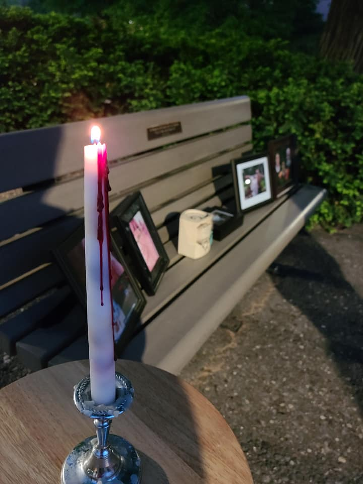
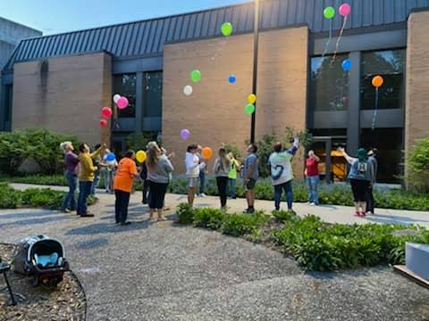
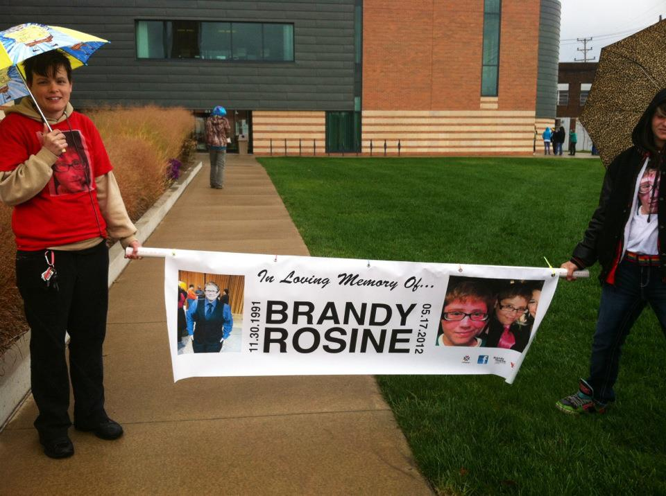
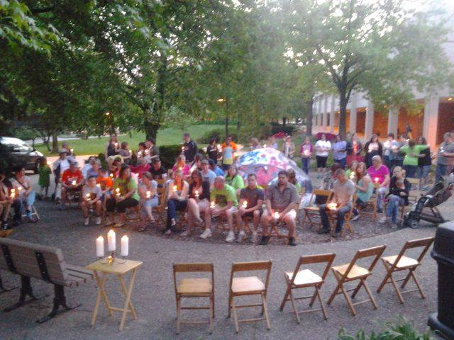
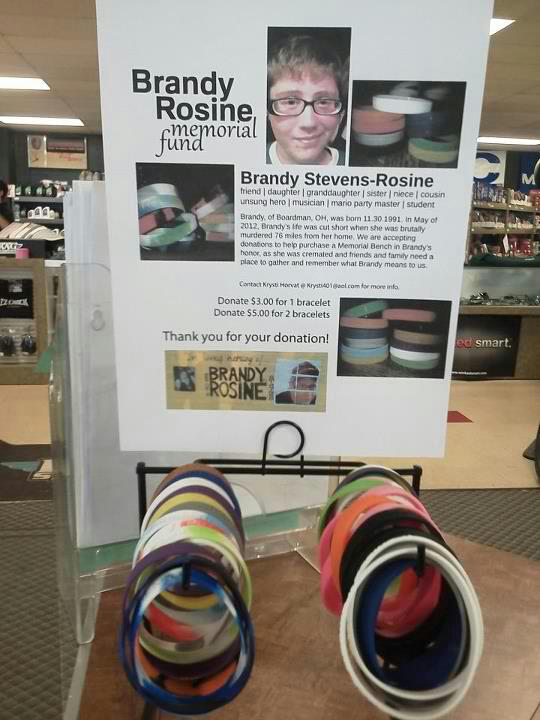
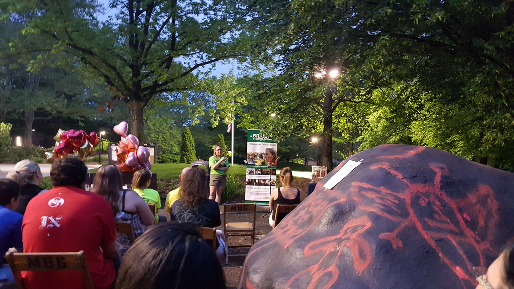
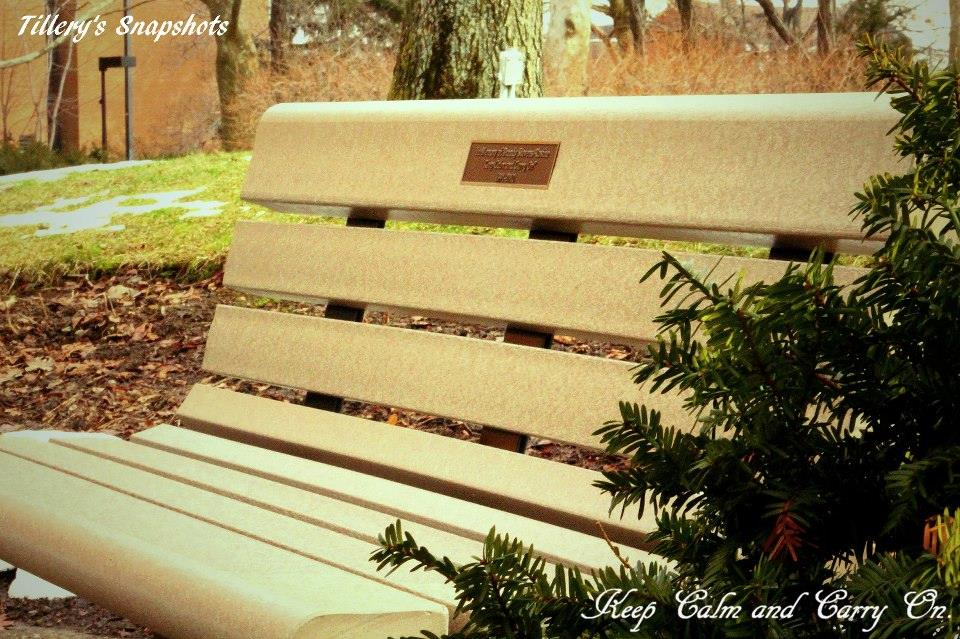

Through the years
At the bench, together








What came after
Brandy's friends and family came together in the aftermath of a loss that left us shocked and grieving. Out of that pain, we built places and traditions to keep her light burning.
After Brandy's death, friends and family raised money through wristband sales and a memorial concert organized by her friend Sebastian. With those funds, in January of 2013, a memorial bench was unveiled on the campus of Youngstown State University.
At last, Brandy's family and friends had a physical place to go to mourn and to remember. We hold our annual candlelight vigils there to this day.
With the donations that remained, we funded scholarships in Brandy's name for Boardman High School students pursuing an education in music.
I hope we can let the light of her memory burn out the shadow of the tragedy that took her from us.

For many years, on or around May 17th, we gathered for an annual candlelight vigil in honor of Brandy at the memorial bench on the YSU campus. It gave Brandy's friends and family, who think of her every day, a place to come together and remember who she was. These gatherings reminded us that we are not alone in our pain, and that it is okay to remember Brandy in a positive light.
Our vigils were always open to the public, usually 20 to 30 people. We would say a prayer, light candles, share memories, and end with a (biodegradable!) balloon launch.
Going forward, we are gathering to mark the milestone anniversaries. We will come together for the fifteen year remembrance in 2027, and again for the twenty year remembrance in 2032. We would love for you to join us. See the Save the Date for details on the 2027 gathering.
Through the years






Our mission is simply to keep Brandy's memory alive and to tell her story, in hopes that maybe someone will learn from it and be compelled to cut dangerous people from their lives.
If you feel moved to make a difference for other families who experience such tragic loss, please consider Parents of Murdered Children (POMC), an organization that supported Brandy's mom throughout all of this. It receives little national attention and relies on donations to operate.
Fifteen Year Remembrance
Saturday, May 15, 2027
Gather with us at the memorial bench to share memories and light a candle for Brandy.